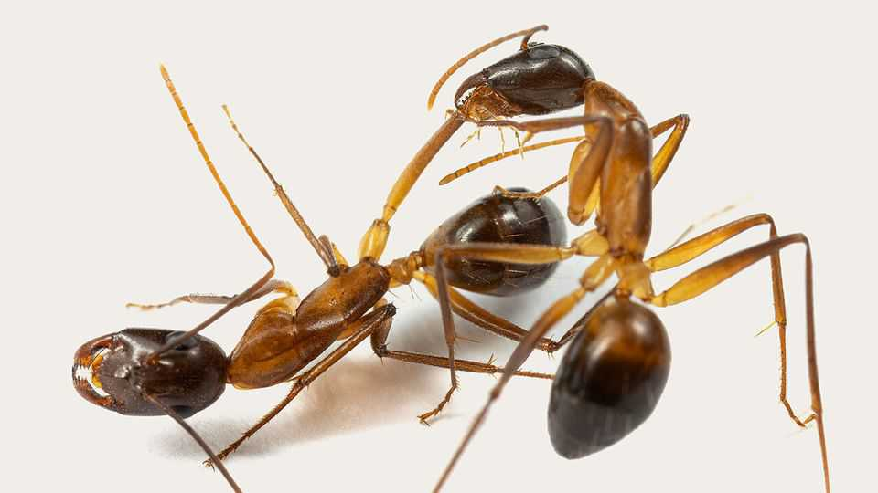

Science & technology | Animal hospital

EYES TRAINED on the patient’s leg, the doctor proceeds with the operation. If the injured limb is not removed, infection and death will swiftly follow. The instrument of choice is a set of strong mandibles. The patient and surgeon are ants. Then comes post-operative care. The diminutive surgeon cleans the stump of potential pathogens with the help of its tongue.
Erik Frank, a biologist at the University of Würzburg, has spent much of his career collecting such examples of ants tending to each other’s wounds. So far, his observations span more than two dozen species, from the amputation-performing Camponotus maculatus to Megaponera analis, which rescues injured comrades from the battlefield before covering their wounds with an antimicrobial goo.
These interventions seem effective. In Camponotus, a carpenter ant found mainly in Africa, amputations within an hour of upper-leg wounds boost survival rates from 30% to 80%. The ants employ a prophylactic approach, amputating regardless of whether the wound is infected or how recently it was inflicted. If ants waited until infection was apparent, the amputation would no longer be effective.
But ants do more than amputate. In earlier research on Megaponera, a predator equipped with a thick cuticle that probably precludes amputation, Dr Frank observed ants carrying nestmates injured in termite raids back to the nest and then cleaning their wounds. These ants keep checking on the wounded for another eight or nine hours. If the wound gets infected, they treat it with an antimicrobial glandular secretion, more than tripling the victim’s chance of survival. In another ant species, Dr Frank found that worker ants with infected wounds were expelled from the nest, while those with sterile leg injuries received continuous wound care.
Ants are an obvious group of animals in which to seek such behaviour. They lead injury-prone lives and their densely populated nests, in close proximity to bacteria-rich soil, make it easy for wounds to get infected. Moreover, as Dr Frank observes, it makes good sense for insects that live in large colonies to place a premium on the well-being of others.
Such phenomena are examples of what is known as social immunocompetence—the ability of an organism to use social interactions and behaviours to enhance immunity and control infection. The full list of such behaviours spotted in ants includes the use of pharmaceuticals, grooming, social spacing, burying the dead, quarantine and exile.
Susanne Foitzik of the University of Mainz is starting to look into the genes involved in rescue and wound-care behaviour. In Temnothorax longispinosus, a common North American species frequently injured when other ants raid their colonies to enslave them, she and colleagues recently identified genetic variants strongly associated with wound care. She plans further experiments to home in on what these genes are doing, which might relate to heightened sensitivity to pheromone signals from injured ants or the synthesis and secretion of antimicrobial substances. Dr Foitzik also found that Temnothorax ant colonies which live in warmer climates—where bacteria proliferate—lick wounds of their injured nestmates more frequently, pointing to the importance of climate as a selection pressure.
Humans might benefit from Dr Frank’s research. He has found a trove of 70 compounds, including 20 proteins, with antimicrobial and wound-healing properties. He notes that some might be useful against human pathogens that have developed resistance to antibiotics.
Ants are by no means the only animals to tend their sick and wounded. Crows, lions, macaque monkeys and chimpanzees do so as well. The mechanisms in these larger animals are, presumably, different. Insects, though capable of learning, have tiny brains, so in them this behaviour is surely genetically ingrained. The birds and mammals on the list, by contrast, are (except for lions, which have not, for obvious reasons, been studied experimentally in this way) species known to be capable of reasoning things out. But natural selection is about ends, not means. And in ants it seems to have arrived at complex medical systems that require neither empathy nor cognition. Just a strong pair of jaws. ■
Curious about the world? To enjoy our mind-expanding science coverage, sign up to Simply Science, our weekly subscriber-only newsletter.